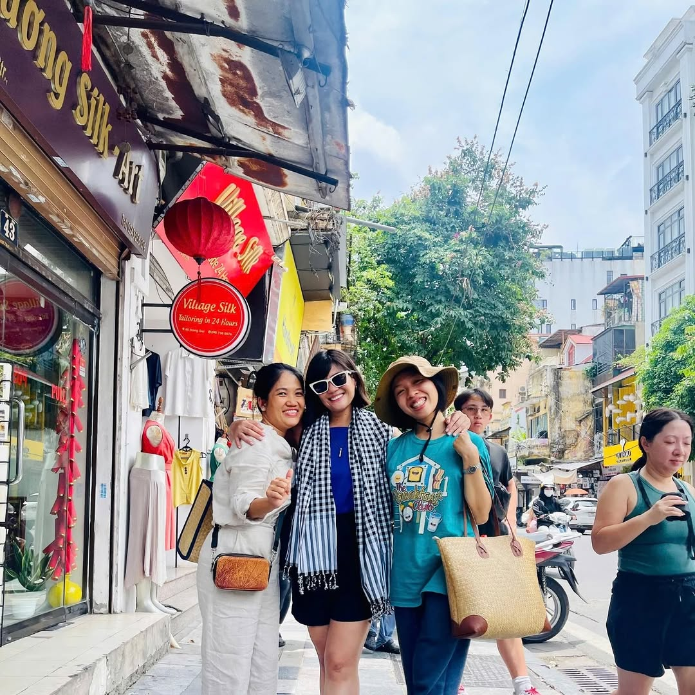
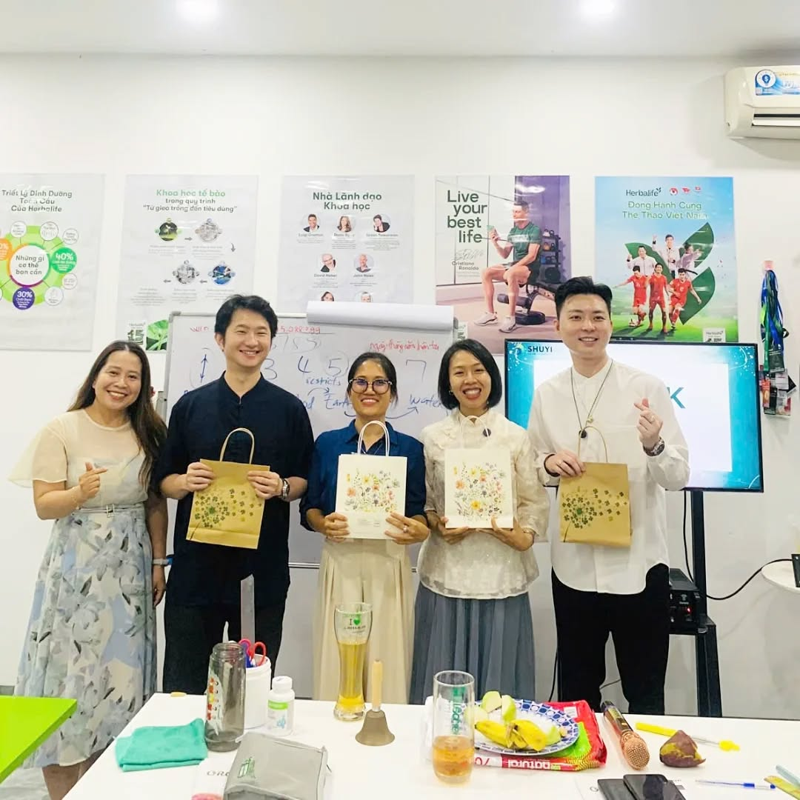
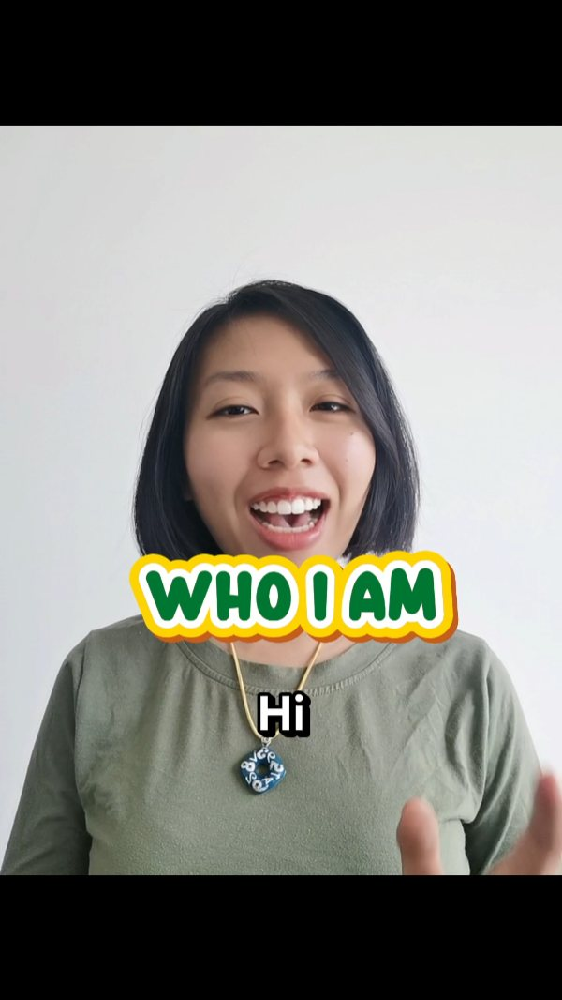

Đề xuất dành riêng — 18 tháng 4, 2026
Một đề xuất cho người đã biết rằng không gì là ngẫu nhiên - và đã đến lúc Instagram cũng phản ánh điều đó.

01 / 06
Không phải phần overview thông thường. Em đọc caption của chị - những bài dài nhất, những bài chị viết khi đang cảm xúc thật sự - và em nhận ra: chị đang mang theo rất nhiều thứ trong lòng, nhưng Instagram của chị chưa kể hết được.
"Mình đã từng không để ý đến điều này. Nhưng khi bắt đầu chữa lành và học cách kết nối với chính mình, mình nhận ra: mọi con số đều có ý nghĩa. Không gì là ngẫu nhiên."
Chị @susan.hongming - instagram.com/p/DLBbUwLzsLp
Đây không phải chỉ là "wellness coach" hay "Iching practitioner" theo nghĩa thông thường. Chị là người đã trải qua một cuộc chuyển hóa thật sự - từ việc không biết mình có tài năng gì, đến ngày đầu tiên đứng trước một lớp Kinh Dịch và cảm thấy "đây là mình". Và từ đó, chị không chỉ học - chị bắt đầu hướng dẫn người khác tìm ra mật mã của chính họ.


Em đọc bài chị viết về chuyến đi Cần Giờ - lần đầu chị làm hướng dẫn viên cho CLB Dinh Dưỡng, mời bạn nước ngoài cùng tham gia - và thấy một câu rất quan trọng: "mình từng tin cần người có nghiệp vụ, chuyên môn, kinh nghiệm du lịch mới làm được. Nhưng bằng sự dẫn dắt, tình yêu thương và mong muốn được cống hiến - mình đã làm được." Đó chính là điều chị đang chứng minh mỗi ngày, và là thứ mà Instagram của chị cần thể hiện rõ hơn.
Chị là người Việt Nam đang đưa trí tuệ cổ Trung Hoa ra thế giới - bằng tiếng Việt, bằng tiếng Anh, bằng chính cuộc đời mình. Không có ai khác trên Instagram Việt đang làm điều này theo cách này. Đây là điều em muốn giúp chị kể lại - rõ ràng hơn, để nhiều người tìm thấy chị hơn.
02 / 06
Quan sát 01
Data không nói dối: carousel trung bình 13,3 likes và 0,79 comments mỗi bài. Reels chỉ đạt 6,1 likes và 0,25 comments. Nhưng trong 100 bài em phân tích, chị đang đăng Reels nhiều gấp đôi carousel (57 vs 29 bài). Chị đang bỏ nhiều công sức nhất vào format kém hiệu quả nhất với account của mình.
Nếu chuyển sang carousel-first, engagement sẽ tăng gấp đôi mà không cần thêm một follower nào.
Quan sát 02
5 bài đáy trong 100 bài: tất cả là Reels, tất cả chỉ có hashtag, không có caption thực sự. Trong khi bài Reels có nhiều comments nhất (19 likes, 5 comments - DVgRExBAcdT) thì người xem có lý do để ở lại vì nó có nội dung thật sự. Reels không caption = Instagram hiểu là chị không muốn truyền tải gì cả.
Thêm 2-3 câu hook + giá trị + CTA vào mỗi Reels có thể tăng views lên 50-80 thay vì 11-30.
Quan sát 03
Shuyi / Life Decoding, Herbalife, Flex45 - ba offer hoàn toàn khác nhau xuất hiện xen kẽ nhau. Không có vấn đề gì với việc có nhiều nguồn thu nhập, nhưng trên Instagram, khi một người mới tìm đến trang của chị, họ không thể trả lời được câu hỏi: "Chị Susan chuyên về cái gì?" Trong khi đó, offer độc đáo nhất - mật mã ngày sinh / Kinh Dịch - lại là offer chị nói ít nhất theo format có chiều sâu.
Đặt Life Decoding là primary positioning. Herbalife + Flex45 vẫn có mặt nhưng không chiếm spotlight chưa đáng.
03 / 06
Ưu tiên hàng đầu
Đầu tư: [liên hệ]
Nền tảng chiến lược
Đầu tư: [liên hệ]
Thực thi nội dung
Đầu tư: [liên hệ]
Thực thi nội dung
Đầu tư: [liên hệ]
04 / 06
Đây là carousel script cho series "Mật mã con số" - một angle chị đã chạm đến nhưng chưa khai thác hết. Em viết theo nhịp câu, cách mở bài, và từ quen của chị.
Carousel script - 6 slides - song ngữ Việt / Anh
Bạn có bao giờ nghĩ rằng tại sao có người rất giỏi giữ tiền, có người lại không? Trong Kinh Dịch, điều này liên quan đến con số bị thiếu trong ngày sinh của bạn. Không phải điểm yếu. Là hành trình bạn được sinh ra để học. Để lại ngày / tháng sinh ở phần bình luận - mình sẽ gửi bạn một gợi ý nhỏ để bắt đầu giải mã. Because your birthday is not random. #fanhongming #范闳茗 #moderniching #wealthandwisdom #ancientwisdom #loveandgratitude #positivevibes
Em viết sample này sau khi đọc 15+ bài đầy đủ của chị. Em cố ý mirror cách chị viết - nhịp câu ngắn, chuyển ngôn ngữ tự nhiên, mở bài bằng câu hỏi quan sát, kết bằng comment trigger. Nếu mình làm việc cùng nhau, mỗi tuần chị sẽ có 4-8 sample như này, mỗi bài đều đi qua bộ check này trước khi gửi chị.
05 / 06
06 / 06
Nếu chị thấy đề xuất này hợp lý, chị nhắn tin cho em trên Instagram. Không call, không form, không áp lực.
Nhắn tin cho em trên Instagram